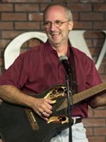

Christian Comedian is Laugh Out Loud, Funny
By Tamie Ross
Clean comedy. The words alone might draw laughs from some.
Al Fike offers just that at Christian Comedy Night, where “Holy Smoke!” is the closest thing to an expletive booming from the stage. His premise is simple: Offer a venue where individuals – and families – can enjoy an evening of comedy without vulgarity. Call it novel, but it’s one man’s crusade to clean up comedy.
“People come purely out of curiosity sometimes,” says Fike, 48, a full-time comic and motivational speaker who lives in Richardson, Texas. “They wonder, ‘Can there really be moral things to do with a family that don’t leave people feeling embarrassed?’”
The answer is yes at the once-monthly Christian Comedy Night at Dallas-area comedy club, The Improv. Some 18 months after its beginning, the idea now has moved to other communities and churches, including White’s Chapel United Methodist Church in Southlake Texas, a suburb of Fort Worth.
“The response at the church has been so positive after just two nights that more already are planned for 2005, the first in January,” says Curt Pool, the church’s director of music and worship ministries.
“For our church, it’s an opportunity to show a different string on the guitar, so to speak,” he says. “On any given weekend in this area, you can hear great contemporary Christian music. That’s a given. But where else could you go for Christian Comedy Night? There aren’t a lot of opportunities out there for a good, clean laugh.”
|
| Comedian, Al Fike's Christian Comedy Night offer a venue where individuals can be entertained without vulgarity. Photo: Courtesy of Al Fike |
Fike agrees, saying people want to laugh – and feel good about what they’re laughing at.
“People pop in, they may or may not be believers,” he says. “But what we’re presenting is an opportunity – a chance for them to have fun and for us to be a witness. And for those who use us as an outreach, it’s a way to impact their circle of influence.”
Nothing, and yet everything is sacred to Fike. He jokes about his master of divinity degree from New Orleans Theological Seminary saying, “Now I can make candy!” Using a violin bow and handsaw, he plays the familiar strains of “Amazing Grace.” He can’t resist mentioning his Christmas CD, “Saw-lent Night.”
“There are several cuts on the album,” he pans.
But the comedy isn’t just about Christians, or Christian things. Fike, a married father of three, draws on his experience both as a child and adult. He does impressions – Billy Graham is a crowd favorite – and he plays the banjo. Some nights he dusts his hands with baby powder, cups them together, and he plays them, too.
Fike handpicks the comedians who perform with him, and all must sign a code of conduct that governs their material and performances. Some have been with him for years, others just a few months. Vickie Ransom, known on stage as Ms. Vickie, is a regular performer. A single mother of four, she bounces between tales of life with teen-agers and mind wandering during worship, dreaming that Mr. Right is in one of the pews.
|  |
| Comedian, Al Fike may be embarrassed of his foul-talking comedian counterparts, but he’s not ashamed of his faith. Photo: Courtesy of Al Fike |
Christian Comedy Night draws between 150 and 250, depending on the location, each who pay up to $12 a ticket. The church events draw a different audience, Fike says.
“Some people just will not go to a club, no matter what,” he says. “And of course, some people get dragged in kicking and clawing.”
For his next act, Fike hopes to conduct comedy retreats for emerging Christian comedians who lack experience. Well-meaning family and friends have asked him for years when he really will put that divinity degree to work. He believes he is called to a ministry of mirth.
“People may not be able to get their friends to come to worship, but they just might be able to convince them to come to Christian Comedy Night,” he says. “They’ll see then that Christians can have fun, too.”
All joking aside, Fike ends every evening with a serious invitation for audience members to think about Jesus and get involved at church. He may be embarrassed of his foul-talking comedian counterparts, but he’s not ashamed of his faith.
Tamie Ross is a freelance journalist based in Dallas.
This feature was developed by UMC.org, the official online ministry of the United Methodist Church.